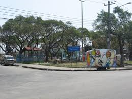
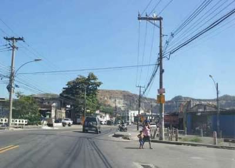
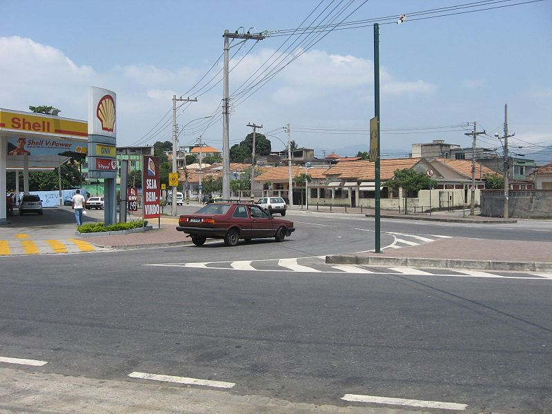

SOBRE
Moro aqui ha 17 anos, gostava muito daqui antes, porquê sempre
tinha eventos na rua e fachava, era alegria de todos, não passava
carros nem motos. Em 2014 todos os meus amigos estavam na rua para
brincar, depois foi cada um para seus cantos e eu também me mudei
em 2015 mas depois voltei. comparando com outros lugares, costumo
dizer que aqui é quese calmo, mas é um lugar que é bom de morar,
só não pode dar mole com os trombadinhas.
FOTOS
  Video encontrado no YOUTUBE
CULTURA
O bairro de Inhaúma nos dias de hoje não apresenta vasta opção de elementos culturais, mas ainda tem três escolas de samba.
Mas já houve cinema, bailes de carnaval em seu principal clube, entre outros. Inhaúma atraiu a boemia
musical carioca a partir dos anos 60, com a construção da Cidade do Som. Eramprédios planejados pela Ordem dos Músicos do Brasil para assegurar casa própria a sambistas com talento inversamente proporcional a sua renda.